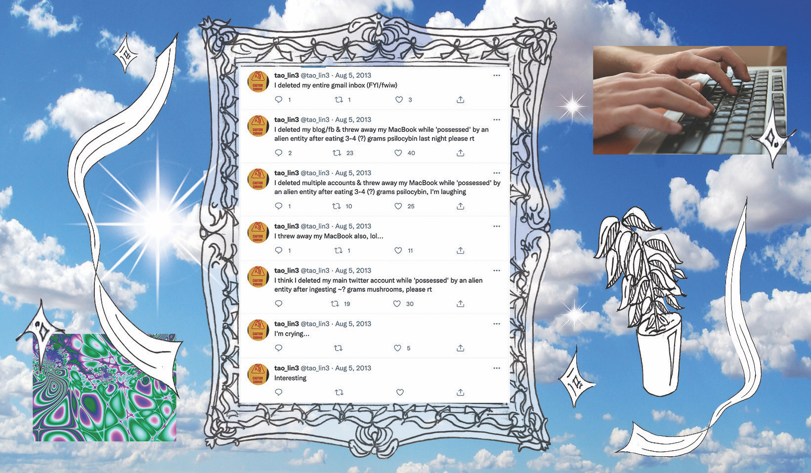
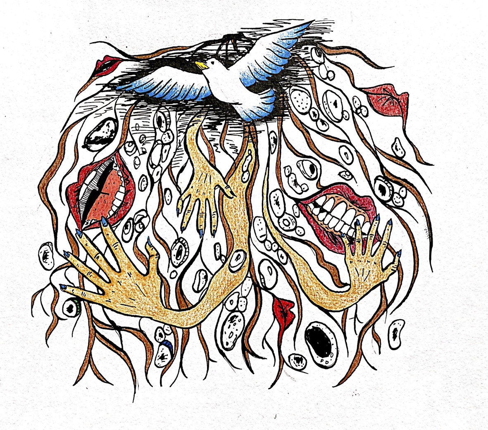

Autofiction and Recovery: Tao Lin's Leave Society
The College Hill Independent
December 2021

The College Hill Independent
Text by Peder Schaefer
November 2021

Of Pride and Condemnation: China's Troubled Past with Confucianism
The College Hill Independent
Text by Tianyu Zhou
October 2021

Poems: Sestina, Hypen, and After Atlanta
The College Hill Independent
Text by Jenna Cooley
September 2021